[,1] [,2] [,3]
[1,] 2 1 1
[2,] 4 3 3
[3,] 8 7 9Linear Algebra in 1HR
Speed Lecture for WIT
Angela Zhao
2025-10-24
Goals
- Connect the core ideas of linear algebra to the geometry and concrete applications.
- Assumes audience has some prior knowledge.
- i.e. vector/matrix operations, subspaces, orthogonality, Advanced Methods Term 1
- Not covered: fundamental subspaces, inverses, determinants, regression (please see Appendix).
1. What is a matrix?
- Matrix \(A \in \mathbb{R}^{m\times n}\) represents a linear map: \(x \mapsto Ax\).
- Examples: rotations, scalings, translations
We can write a system of equations into the form \(Ax = b\).
\[\begin{align} x_1 + x_3 &= 1 \ \ \ \ \ \ \ \ \ \ \text{Eq. 1} \\ x_1 + 2x_2 + x_3 &= 1 \ \ \ \ \ \ \ \ \ \ \text{Eq. 2}\\ 3x_1 + 2x_3 &= 10 \ \ \ \ \ \ \ \ \text{Eq. 3}\\ \\ \begin{bmatrix} 2 & 1 & 1 \\ 4 & 3 & 3 \\ 8 & 7 & 9 \end{bmatrix} \begin{bmatrix} x_1 \\ x_2 \\ x_3 \end{bmatrix} &= \begin{bmatrix} 1 \\ 1 \\ 10 \end{bmatrix} \\ \\ Ax &= b \end{align}\]
- Core goal: find \(x\) that solves \(Ax=b\)
- \(Ax=b\) in \(\mathbb{R}^2\) can have 0, 1, or infinitely many solutions
Three geometric cases (lines in \(\mathbb{R}^2\))
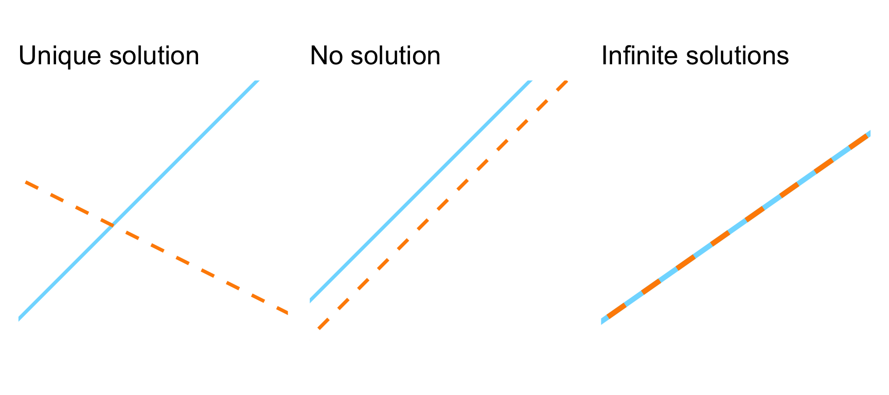Solving \(Ax=b\)
Every matrix wants to be diagonal
| Perspective | Object | Geometric meaning |
|---|---|---|
| LU | Row operations | Basis change for row space |
| QR | Orthogonal projection | Stable coordinate system |
| SVD | Singular directions | “Best-fit” basis for both domain & range |
LU, QR, and SVD all express the same geometric truth.
We change coordinates to make the system easier to solve.
Under finite precision, different geometries have different stability.
1. LU Decomposition
Elementary row operations
Multiply row \(i\) by a constant \(K\): \(\ \ \ \ \ E = \begin{bmatrix} K & 0 \\0 & 1 \\ \end{bmatrix}\)
Add multiple of row \(i\) to row \(j\): \(\ \ \ \ \ \ E = \begin{bmatrix} 1 & 0 \\ \alpha & 1 \\ \end{bmatrix}\)
Row swap \(i \leftrightarrow j\): \(\ \ \ \ \ \ \ \ \ \ \ \ \ \ \ \ \ \ \ \ \ \ \ \ \ P = \begin{bmatrix} 0 & 1 \\ 1 & 0 \\ \end{bmatrix}\)
- Elementary operations transform \(A\) into an upper triangular matrix \(U\).
- We can use multiply the inverse elementary operations together in to construct the lower triangular matrix \(L\).
- Normalize \(U\) to unit diagonal: \(U=\underbrace{D}_{\text{diag}(u_{11},\dots)}\underbrace{U'}_{\text{unit upper}}\) → \(A=LDU'\).
- Triangular systems are easy to solve with back substitution.
- LDU representation is unique to A.
Example:
Define the elementary operations
[,1] [,2] [,3]
[1,] 1 0 0
[2,] -2 1 0
[3,] 0 0 1 [,1] [,2] [,3]
[1,] 1 0 0
[2,] 0 1 0
[3,] -4 0 1 [,1] [,2] [,3]
[1,] 1 0 0
[2,] 0 1 0
[3,] 0 -3 1LU decomposition
Extend to LDU decomposition
[,1] [,2] [,3]
[1,] 2 0 0
[2,] 0 1 0
[3,] 0 0 2 [,1] [,2] [,3]
[1,] 1 0.5 0.5
[2,] 0 1.0 1.0
[3,] 0 0.0 1.0 [,1] [,2] [,3]
[1,] 1 0 0
[2,] 2 1 0
[3,] 4 3 1- The diagonal of D contains the pivots. If any pivot is 0, the system is singular.
LU decomposition visualized
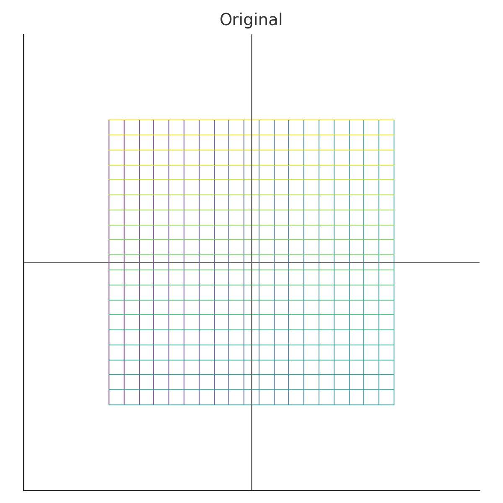Application: Predator-Prey Model
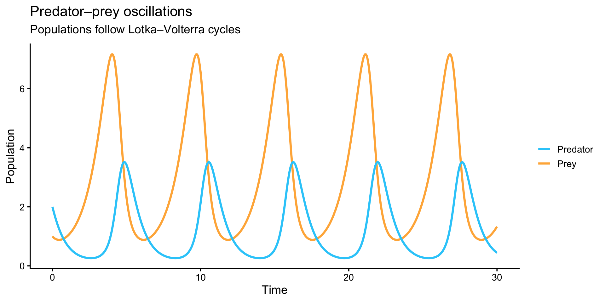What is the equilibrium point at which both populations are stable?
\[ \frac{dx}{dt} = \alpha x - \beta x y, \qquad \frac{dy}{dt} = \delta x y - \gamma y, \] where \(\,x(t)\) is the prey population, and \(\,y(t)\) is the predator population. The equilibrium point is when \(\frac{dx}{dt}=\frac{dy}{dt}=0\).
It is easy to solve by hand that the equilibrium is at \[ x^* = \frac{\gamma}{\delta} \qquad y^* = \frac{\alpha}{\beta}. \]
Define prey carrying capacity \(K\) and max predation rate \(\frac{x y}{1+a x}\):
\[ \frac{dx}{dt}=\alpha x\!\left(1-\frac{x}{K}\right) - \beta\,\frac{x y}{1+a x}, \qquad \frac{dy}{dt}=\delta\,\frac{x y}{1+a x} - \gamma y. \]
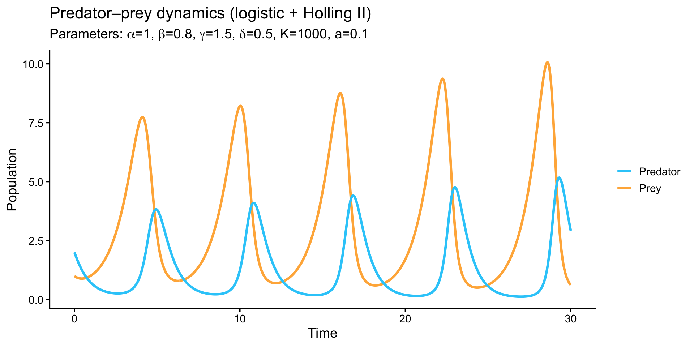Newton’s method
Let \(z=\begin{bmatrix}x\\y\end{bmatrix}\) and \(f(z)=\begin{bmatrix}f_1(x,y)\\ f_2(x,y)\end{bmatrix}\).
We define the Jacobian \(J(x,y)= \begin{bmatrix} \frac{\partial f_1}{\partial x} & \frac{\partial f_1}{\partial y}\\ \frac{\partial f_2}{\partial x} & \frac{\partial f_2}{\partial y} \end{bmatrix},\)
One Newton step solves \[ J(x_k,y_k)\,\Delta z_k \;=\; -\,f(x_k,y_k), \qquad z_{k+1}=z_k+\Delta z_k, \] which we compute efficiently via an LU factorization of \(J\).
Parameters and initial guess: \[ \alpha=1.0,\ \beta=0.8,\ \gamma=1.5,\ \delta=0.5,\ K=1000,\ a=0.1 \\ z_0=(x_0,y_0)=(4,2). \]
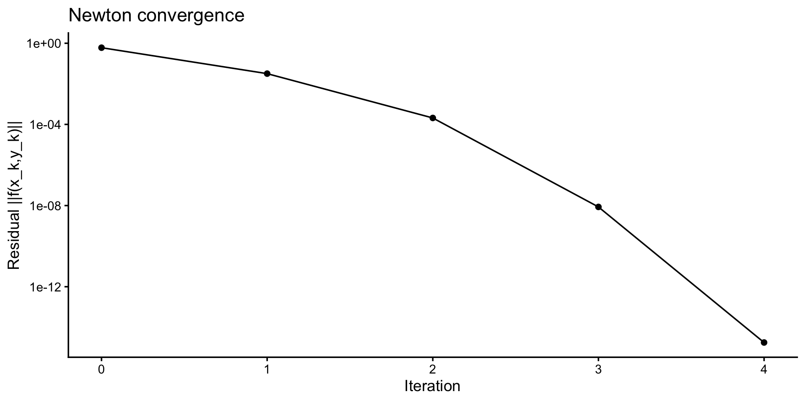Equilibrium found: x = 4.29 y = 1.78
Application: Differential equations
We solve the boundary value problem \[ - u''(x) = f(x), \qquad 0 < x < 1,\qquad u(0)=u(1)=0. \]
What is \(u\)?
Examples of boundary value problems
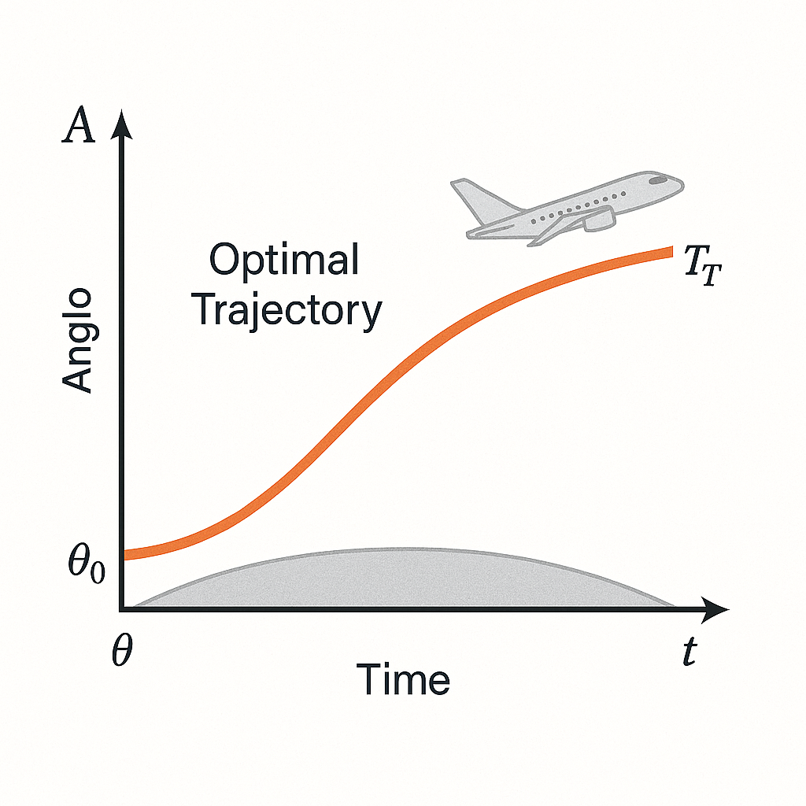
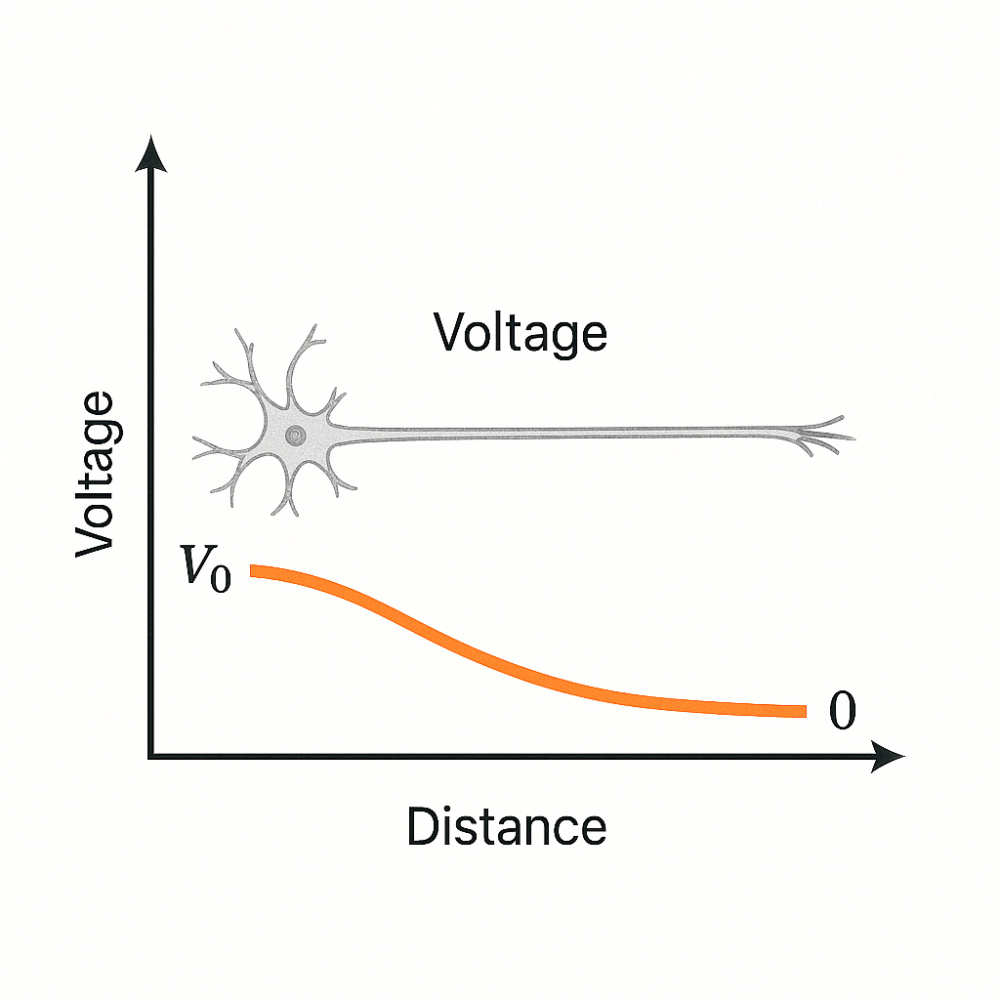
Grid and discretization
\[- \frac{u_{i-1} - 2 u_i + u_{i+1}}{h^2} = f(x_i), \qquad i=1,\dots,n\]
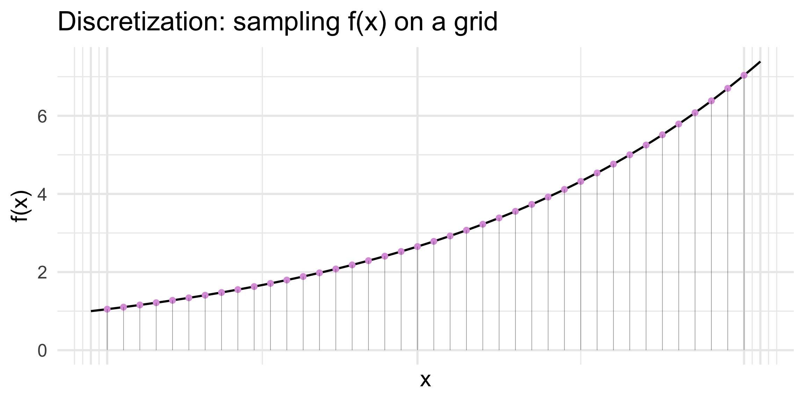In vector form this is \(A\,u = b\), where \(u=(u_1,\dots,u_n)^\top\), \(b_i=f(x_i)\), and
\[ A = \frac{1}{h^2}\begin{bmatrix} -2 & 1 & & & \\ 1 & -2 & 1 & & \\ & 1 & \ddots & \ddots & \\ & & \ddots & -2 & 1 \\ & & & 1 & -2 \end{bmatrix}. \]
We solve \(A u = b\) (e.g., via sparse LU with permutation).
Concrete example: \(u''(x) = f(x) = e^{2x}\).
The solution that satisfies the differential equation and boundary solutions is
\[u(x) = \frac{1}{4}(1 - e^{2x} + (e^2 -1))\]
Discretizing the equation tells us to solve for the vector \(u = (u_1, ..., u_n)^\top\):
\[Au = b = (f(x_1), f(x_2), ..., f(x_n))^\top\]
Solving the discretized matrix gives the same result.
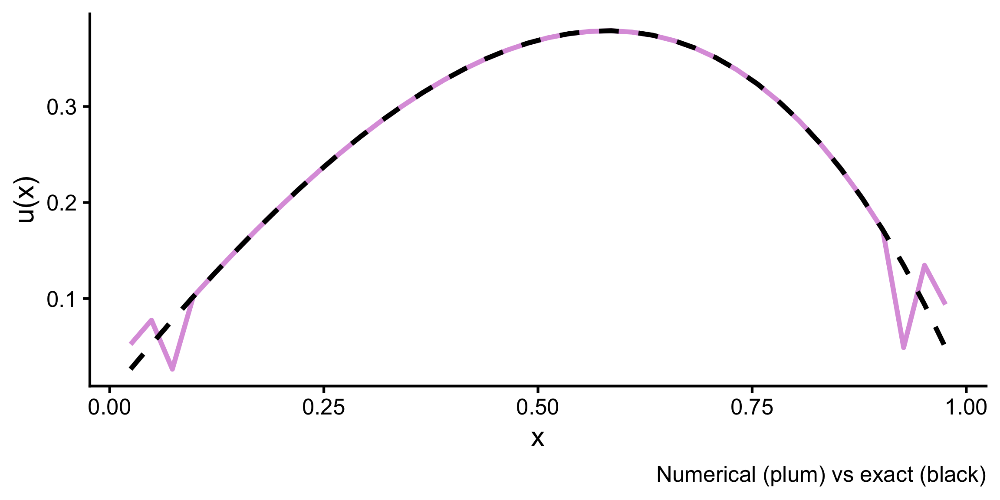Numerical pitfalls
Problem: When rows of \(A\) are nearly linearly dependent
Example:
\[A = \begin{bmatrix} 1 & 1 \\ 1 & 1 + \epsilon \\ \end{bmatrix} = \begin{bmatrix} 1 & 0 \\ 1 & 1 \\ \end{bmatrix} \begin{bmatrix} 1 & 1 \\ 0 & \epsilon \\ \end{bmatrix} = LU\]
When \(\epsilon \rightarrow 0\), the second pivot \(U_{22} \rightarrow 0\). Tiny pivots flatten the grid into a near-line. Round-off errors explode as \(U\) collapses and \(L\) re-expands them
LU decomposition when \(A\) is ill-conditioned
2. QR Decomposition
- The previous problem motivates QR Decomposition.
- QR decomposition works in the column space instead of the row space.
- We can orthogonalize columns to ensure stability (using Gram-Schmidt algorithm).
Aside: Projection onto a line; cosine & least squares
For nonzero \(a\), project \(y\) onto the coordinates of \(a\): \[ \hat{y} = \frac{a^\top y}{a^\top a}\; a, \qquad \cos\theta=\frac{a^\top y}{\|a\|\,\|y\|}. \]
a y yhat
[1,] 2 1 1.6
[2,] 1 2 0.8The least‑squares problem \(\min_x \|Ax-b\|_2\) is an orthogonal projection of \(b\) onto the column space of \(A\).
QR example:
\[ A = \begin{bmatrix} 1 & 1 \\ 1 & 1.1 \\ 1 & 0.9 \end{bmatrix} = \begin{bmatrix} \,|\, & \,|\, \\ a_1 & a_2 \\ \,|\, & \,|\, \end{bmatrix} \]
\(A\) is nearly singular.
We apply the Gram–Schmidt algorithm to orthonormalize the columns of \(A\):
\[ q_1 = \frac{a_1}{\|a_1\|}, \qquad u_2 = a_2 - (q_1^\top a_2)\,q_1, \qquad q_2 = \frac{u_2}{\|u_2\|}. \]
\[ q_1 = \frac{a_1}{\|a_1\|} = \frac{1}{\sqrt{3}} \begin{bmatrix} 1 \\ 1 \\ 1\end{bmatrix} \\ \]
\[ u_2 = a_2 - (q_1^\top a_2)\,q_1 = \begin{bmatrix} 1 \\ 1.1 \\ 0.9\end{bmatrix} - 1.732 \times \frac{1}{\sqrt{3}} \begin{bmatrix} 1 \\ 1 \\ 1\end{bmatrix} = \begin{bmatrix} 0 \\ 0.1 \\ -0.1\end{bmatrix} \\ q_2 = \frac{u_2}{\|u_2\|} = \begin{bmatrix} 0 \\ 0.7071 \\ -0.7071\end{bmatrix}. \]
Then we can write \[ Q = \begin{bmatrix} \,|\, & \,|\, \\ q_1 & q_2 \\ \,|\, & \,|\, \end{bmatrix} = \begin{bmatrix} \frac{1}{\sqrt{3}}, & 0, \\ \frac{1}{\sqrt{3}} & 0.7071 \\ \frac{1}{\sqrt{3}}, & -0.7071 \end{bmatrix} \]
Since \(q_1, q_2\) are a basis for \(A\), we can express \(a_1, a_2\) as linear combinations of \(q_1, q_2\).
\[ a_j = (q_1^\top a_j)\,q_1 + (q_2^\top a_j)\,q_2 \] The coefficients of the linear combinations can be written as an upper triangular matrix, \(R\):
\[R = \begin{bmatrix} q_1^\top a_1 & q_1^\top a_2 \\ 0 & q_2^\top a_2 \end{bmatrix} = \begin{bmatrix} 1.723 & 1.723 \\ 0 & 0.141 \end{bmatrix} \]
So the QR decomposition is
\[ A = \begin{bmatrix} \,|\, & \,|\, \\ a_1 & a_2 \\ \,|\, & \,|\, \end{bmatrix} = \begin{bmatrix} \,|\, & \,|\, \\ q_1 & q_2 \\ \,|\, & \,|\, \end{bmatrix} \begin{bmatrix} q_1^\top a_1 & q_1^\top a_2 \\ 0 & q_2^\top a_2 \\ \end{bmatrix} = QR \]
- Here \(Q\) has orthonormal columns (\(q^\top q = 1\))
- \(R\) collecting the projection coefficients \(q_i^\top a_j\), upper triangular
Geometrically \(Q\) rotates the correlated columns of \(A\) into perpendicular directions, \(R\) rescales columns to preserving numerical stability.
Application: Whitening/decorrelating
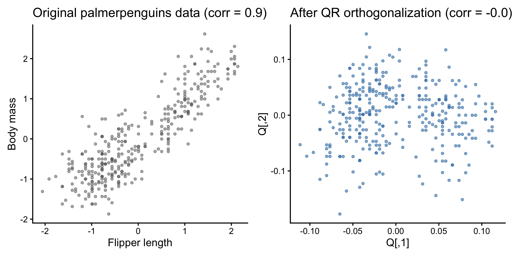QR decorrelates the features
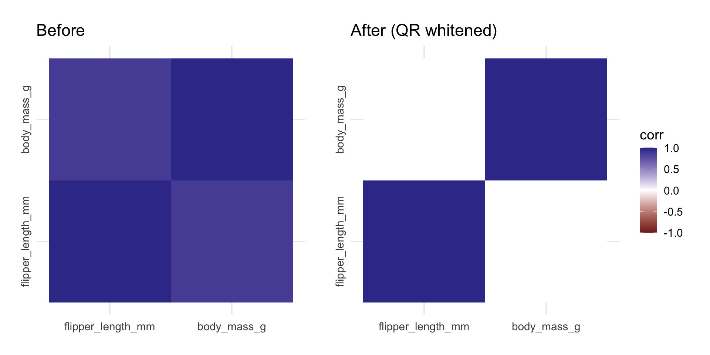| Method | Pros | Cons |
|---|---|---|
| LU | Diagonalizes square matrices | Does not work if matrix is ill-conditioned |
| QR | Orthogonal projection can triangularize even ill-conditioned matrices | Does not diagonalize |
Can we diagonalize any matrix?
When can we make a matrix truly diagonal?
We can write certain square matrices \(A_{n\times n}\) in the form \[A = Q\Lambda Q^{-1}, \Lambda = diag\{\lambda_1, ..., \lambda_n\}\]
These square matrices are diagonalizable.
Eigenvalues \(\lambda_1, ..., \lambda_n\) are obtained by solving for \(\lambda\) s.t. \(\forall x: Ax = \lambda x\).
For each \(\lambda_i\), solve for eigenvector \(x_i\) in \(Ax_i = \lambda_i x_i\).
- \(A_{n\times n}\) can have 0, 1, …, n real eigenvalues.
- If \(A\) is symmetric, it has real eigenvalues.
- If \(\lambda_i\)’s are distinct, then \(x_i\)’s are orthogonal. Then,
\[Q = \begin{bmatrix} \,|\, & \,|\, & & \,|\,\\ x_1 & x_2 & \dots & x_n\\ \,|\, & \,|\, & & \,|\, \end{bmatrix}, \ \ Q^{-1} = Q^\top\]
Diagonalization reveals the invariant directions \(x_i\)’s and their scaling \(\lambda_i\)’s.
Computing \(A^k\) is fast with diagonalization: \(A^k = Q \Lambda^k Q^{-1}\).
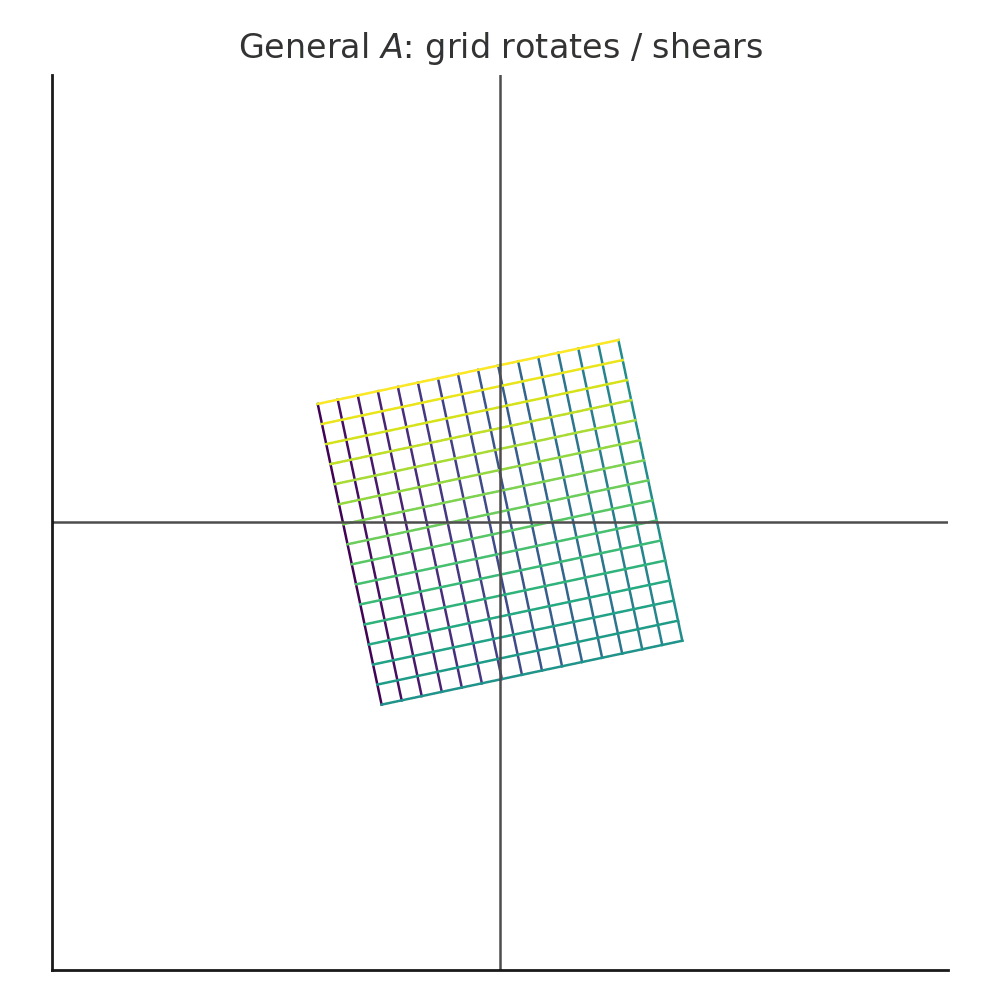
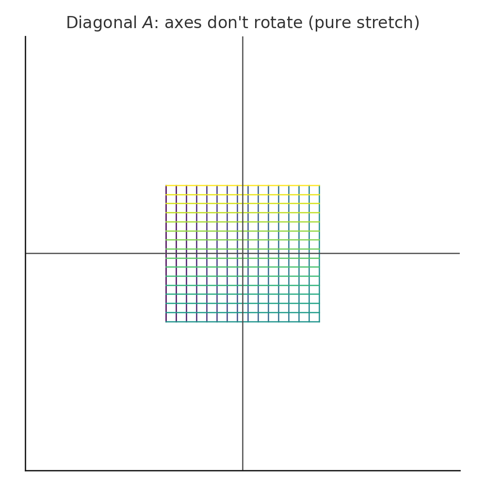
Applications: Predator-prey model
Basic model:
Set \(\alpha=1.0, \beta=0.8, \gamma=1.5, \delta=0.5\).
Earlier, we found the equilibrium: \[ x^* = \frac{\gamma}{\delta} = 3\qquad y^*= \frac{\alpha}{\beta} = 1.25 \]
How does the system behave around the equilibrium?
We can answer this by inspecting the eigenvalues of the Jacobian.
\[ J(x^∗,y^∗)=VΛV^{−1}, \]
Jacobian: [,1] [,2]
[1,] 0.000 -2.4
[2,] 0.625 0.0Eigenvalues:[1] 0+1.224745i 0-1.224745iEigenvectors: [,1] [,2]
[1,] -0.8907235+0.0000000i -0.8907235+0.0000000i
[2,] 0.0000000+0.4545455i 0.0000000-0.4545455iSystem oscillates around equilibrium without ever reaching it.
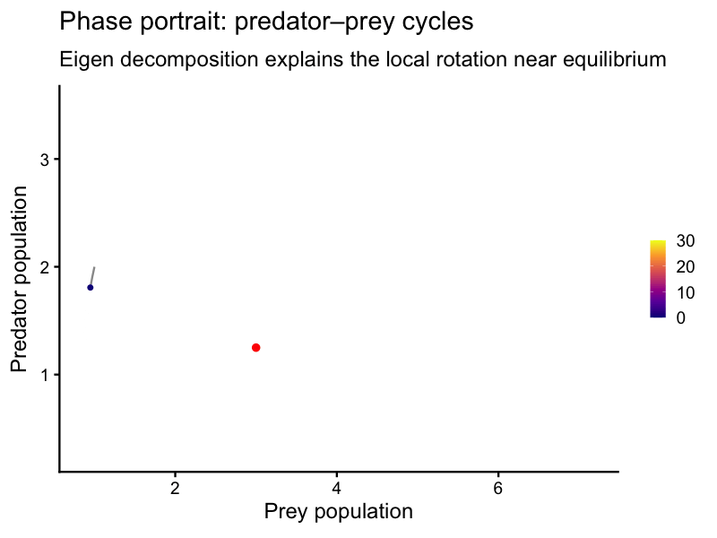Add prey carrying capacity and max predation rate:
\[ \frac{dx}{dt}=\alpha x\!\left(1-\frac{x}{K}\right) - \beta\,\frac{x y}{1+a x}, \qquad \frac{dy}{dt}=\delta\,\frac{x y}{1+a x} - \gamma y. \]
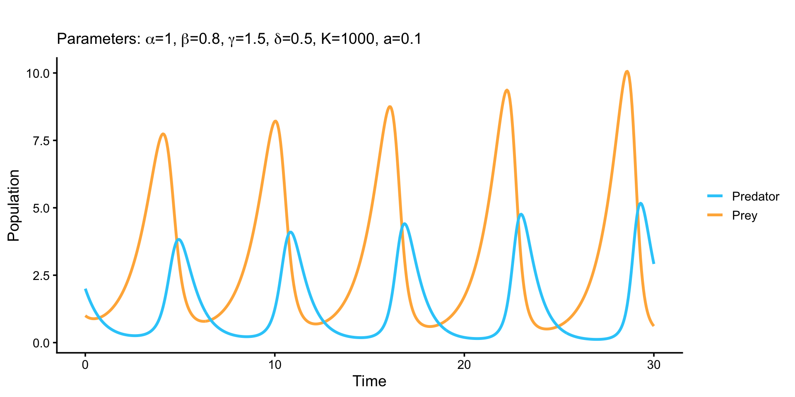Set \(\alpha=1.0, \beta=0.8, \gamma=1.5, \delta=0.5, K=1000, a=0.1\).
Earlier, we found the equilibrium: \[ x^* = 4.29 \qquad y^*= 1.78 \]
Jacobian at chosen equilibrium (K,0): [,1] [,2]
[1,] -0.3178362 -3.2908237
[2,] 0.8182852 0.5567648
Eigenvalues:[1] 0.1194643+1.581645i 0.1194643-1.581645iEigenvectors: [,1] [,2]
[1,] 0.8949082+0.0000000i 0.8949082+0.0000000i
[2,] -0.1189197-0.4301133i -0.1189197+0.4301133iIn both examples, eigenvalues of \(J\) are complex in the form \(a \pm ib\) . \(b\) is the rotation speed and \(a\) is the growth/decay rate. If \(a \gt 0\) like in our second example, the system is unstable and never reaches equilibrium.
Not every matrix is lucky :(
Symmetric square matrices are always diagonalizable. But this is not true if the matrix is either not symmetric or not square.
Can we find orthogonal directions that best capture \(A\)’s stretching for any matrix?
3. Singular Value Decomposition
- Any matrix \(A_{m\times n}\) can be diagonalized using SVD:
\[A = U \Sigma V^\top, \qquad \Sigma = diag(\sigma_1, ..., \sigma_r), \qquad \sigma_i \ge 0\]
- \(V\): eigenvectors of \(A^\top A\)
- \(U\): eigenvectors of \(A A^\top\)
- \(\sigma_i^2\): corresponding eigenvalues (the “energy” per direction)
\[A^\top A v_i = \sigma_i^2 v_i, \qquad AA^\top u_i = \sigma_i^2 u_i\]
Geometrically, for an input \(x\) and linear transformation \(A_{m \times n}: \mathbb{R}^n \rightarrow \mathbb{R}^m\):
- \(V^\top\) rotates/re-expresses the \(x\) onto the orthonormal basis of the input space of \(A\) in \(\mathbb{R}^n\).
- \(\Sigma\) stretches \(V^\top x\) along the new directions (\(\sigma_1 \ge \sigma_2 \ge ...\))
- \(U\) rotates \(\Sigma V^\top x\) onto the output space of \(A\) in \(\mathbb{R}^m\).

Application: PCA
PCA simplifies complex data \(X\) by changing the coordinate system to (orthogonal) principal components (PCs, \(v_k\)).
Each PC is a linear combination of the original variables that captures maximal remaining variance.
PC scores are the coefficients for the linear combinations.
We hope that a few PCs capture most of the variance in \(X\).
Steps:
- For the centered data matrix \(X\), perform the SVD:
\[ X = U \Sigma V^\top, \]
- Define
- Principal componenets (eigenvectors): \(V = [v_1, \dots, v_p]\)
- Scores: \(Z = X V = U \Sigma\)
- Variance explained by component \(i\): proportional to \(\sigma_i^2\)
Thus, the SVD directly provides the PCA decomposition: \[ X = Z V^\top = U \Sigma V^\top. \]
Note:
PCA can equivalently be obtained by the eigendecomposition of the covariance matrix \[
S = \tfrac{1}{n-1} X^\top X = V \left(\tfrac{\Sigma^2}{n-1}\right) V^\top,
\] which differs from the SVD formulation only by the scaling factor \(1/(n-1)\).
Example: Penguin data
- Covariates: species, bill length, bill depth, flipper length
- PCA decorrelates the x and y axes
PC1 captures overall size (bill + flipper length).
PC2 captures shape (bill depth vs. length).
The 3 species cluster along these orthogonal axes.
Conclusion
LU gives fast solutions, but not stable ones; QR gives stability; SVD gives structure and universality.
Thank you!
Appendix
- Singular vs. nonsingular: pivots in elimination, rank \(= n\), later: \(\det A \neq 0\).
- Appendix A: Fundamental Theorem of Linear Algebra
- Appendix B: WLS and FFT Examples for QR and Gram-Schmidt
- Appendix C: Determinants
Appendix A
Fundamental Theorem of Linear Algebra
For \(A\in\mathbb{R}^{m\times n}\), there are 4 fundamental subspaces:
Column space \(C(A)\) \(\subseteq \mathbb{R}^m\)
Nullspace \(N(A)\subseteq \mathbb{R}^n\);
Row space \(C(A^\top)\subseteq \mathbb{R}^n\)
Left nullspace \(N(A^\top)\subseteq \mathbb{R}^m\);
Fundamental Theorem of Linear Algebra
Orthogonality:
\(C(A)^\perp= N(A^\top)\)
\(C(A^\top)^\perp= N(A)\);
Dimensions:
\(\dim C(A)=\dim C(A^\top)=\mathrm{rank}(A)=r\)
\(\dim N(A)=n-r\), \(\dim N(A^\top)=m-r\).
Small example
Why useful? It describes existence and structure of solutions: - \(Ax=b\) solvable iff \(b\in{C}(A)\). - Solutions are \(x=x_p + x_n\) with \(x_n\in{N}(A)\) (non‑uniqueness lives in the nullspace). - Invertibility \(\Leftrightarrow r=n\) \(\Rightarrow\) unique solution.
Orthogonality (vectors, subspaces)
Projection onto a line; cosine & least squares
For nonzero \(a\), the projection of \(y\) onto \(\mathrm{span}\{a\}\): \[ \hat y = \frac{a^\top y}{a^\top a}\; a, \qquad \cos\theta=\frac{a^\top y}{\|a\|\,\|y\|}. \]
a y yhat
[1,] 2 1 1.6
[2,] 1 2 0.8The least‑squares problem $ min_x ||Ax-b||_2$ is an orthogonal projection of \(b\) onto \({C}(A)\).
Appendix B
Applications of Gram–Schmidt and QR
- WLS (weighted least squares): Minimize \(\|W^{1/2}(Ax-b)\|_2\). Normal equations: \((A^\top W A)\hat x=A^\top W b\) (SPD). Use Cholesky on \(A^\top W A\).
- If you need a refresher on the Fourier transform, this video is my favourite.
- FFT (orthogonality over \(\mathbb{C}\)): columns of the DFT matrix are orthogonal.
Appendix C
Determinants
Definition & three key properties
- Multilinear & alternating in rows (or columns).
- Effect of elementary ops: swap → sign change; scaling a row by \(c\) → factor \(c\); adding multiple of a row → unchanged.
- Multiplicativity: \(\det(AB)=\det(A)\det(B)\).
Consequences: - \(\det(A)\neq 0 \iff A\) invertible; \(\det(L)\) and \(\det(U)\) are products of diagonals.
- Product of pivots (up to sign) = \(\det(A)\).
- Volume scaling: \(|\det A|\) = factor by which \(A\) scales \(n\)-volume.
Deriving the formula (permutations & cofactors)
\[ \det(A)=\sum_{\sigma\in S_n}\mathrm{sgn}(\sigma)\prod_{i=1}^n a_{i,\sigma(i)}. \]
Cofactor expansion along row \(i\): \[ \det(A)=\sum_{j=1}^n a_{ij} C_{ij},\qquad C_{ij}=(-1)^{i+j}\det(A_{ij}). \]
Example (3×3)
Applications (small systems)
- \(A^{-1}=\dfrac{1}{\det A}\, \mathrm{adj}(A)\) (conceptual, not for computing large inverses).
- Cramer’s Rule (good for 2×2 demo).